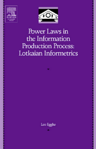
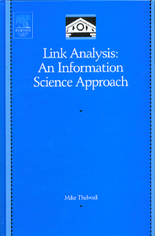

|  |
|  |
| About IR |
| Editors |
| Author instructions |
| Copyright |
| Author index |
| Subject index |
| Search |
| Reviews |
| Register |
| Home |
Informetrics: quantitative analysis of information
It is a rare occasion that one has a possibility, as in this case, to review two new books on informetrics (this being a research area dominated by scientific papers). Both are published by Elsevier Academic Press within an interval of two months (December 2004 - January 2005), which might mean that quantitative aspects of information are recognized as gaining importance and also that the critical mass of research into certain problems has accumulated and there are mature scientists feeling the need to produce the monographic works. The books by Egghe and Thelwall definitely prove both latter assumptions. The authors are established authorities in the field and both started as mathematicians. Egghe has worked in informetrics since the 1980s. He is the chief librarian and the leader of a bibliometrics research project at Limburg Universitair Centrum University Library as well as a professor at the University of Antwerp. Thelwall leads the Statistical Cybermetrics Research Group and is a professor at the University of Wolverhampton. His career in informetrics is much 'younger', beginning around 2000.
It is also something of a rare occasion, these days, to be pursued by the editor of this excellent organ (or, on this occasion, by the Book Reviews Editor). I thought that my move of the Institute to Nida on the Curonian Spit had gone unnoticed (and, indeed, it has not been noticed by the inhabitants, leading to the conclusion that perhaps my own existence is now only identifiable hermeneutically), but perhaps it was unwise of me to inform Wilson's wily friend, Streatfield, of my location. Nonetheless, I am happy to be pulled out of almost total retirement by this request, and happy to turn my mind from the curiosities of Lithuanian irregular verbs (which pose particular problems for hermeneutical analysis of Lithuanian texts—at least for me) to the curiosities of 'informetrics'.
Though both books belong to the field of informetrics they are quite different from the point of view of goals, presentation and style.
Egghe, Leo. Power laws in the information production process: Lotkaian informetrics. Kidlington, Oxfordshire: Elsevier Academic Press, 2005. xvii, 427 p. ISBN 0-12-088753-3. £68.99.
This monograph is devoted to explaining the regularities encountered in literature (information production) using Lotka's size frequency function. Lotka's law is treated as a tool that can be used for various informetric issues helping to explain certain regularities in the light of earlier results without always starting from zero (p. 295).
Alfred Lotka introduced the power function named after him in 1926. The author proves that in the information production process this is the most important regularity and that numerous informetric regularities can be explained by this decreasing power law as size-frequency function. The extensive explanation of Lotkaian bibliometrics and its developments is given in Chapters 1 and 2. In the latter, the relations with other laws (like Zipf's, Bradford's, etc) are determined. In other chapters the Lotka function is applied to three-dimensional informetrics (Chapter 3), concentration theory (Chapter 4), fractal theory (Chapter 5), for multiple sources items (Chapter 6 - a most intriguing application using convolution theory), and to the exploration of a variety of other issues in the final Chapter 7 (e.g., the first-citation distribution or relationship between citation age and journal productivity). There is also an Appendix describing the methods to determine the parameters in Lotka's law, based on a set of discrete data. All six chapters explore the application of Lotka's law for classical bibliometrics (bibliographies, libraries) and in newer informetric issues (such as collaboration networks).
Egghe has based this monograph on his long-term research, conducted over the past 20 years. He also draws extensively on the literature of the field.
Despite the promise of the author that "mathematical knowledge required is limited to elementary mathematics such as first-year calculus" (p. viii) the reader who rarely applies his once-acquired elementary mathematics (like me) will have to put certain effort into reading and understanding the book. But this intellectual challenge is a rewarding experience that enhances the understanding of a variety of information phenomena.
The main audience the book addresses is, without any doubt, the informetrics community and information scientists, as well as others interested in power laws, who may be as varied as physicists or sociologists and economists.
Thelwall, Mike.Link analysis: an information science approach. San Diego, CA: Elsevier Academic Press, 2004. xxx p. ISBN 0-12-088553-0. £43.99.
Thelwall's book is of a different character and form. First: the book is hybrid as it is partly online and partly printed. It includes text, software and data. Apart from this hardcover version, the price of which is mentioned above, there is also a freely accessible part on the Web. The online users may not even be aware that the book exists, but the readers of the book will be guided to the online part, which is constantly updated. Of course, the text in the book will remain as it is until a second edition appears. The online pages include the references with links, corrections to mistakes in the book, links to helpful Websites and software, and to the data collections used for research described in various chapters. The online material is organized according to the chapters in the monograph. The offline part of the book includes six main parts (Theory, Web structure, Academic links, Applications, Tools and techniques, Summary) and a tutorial for SocSciBot.
The main object, on which attention is focused, is the interlinking of Websites as a source of evidence for a variety of disciplines. The author introduces the information science approach, which parallels citation analysis. This approach may be used when link analysis is performed with the aim of obtaining useful information. The author regards it as a part of Webometrics and/or cybermetrics.
The questions that the book explores are formulated on p. 2:
- Which kinds of information can be extracted by analysing the hyperlinks between a set of Web pages or sites?
- Which techniques should be used?
- What are the likely pitfalls of link analysis?
- How can and should a link analysis be conducted in practice?
The author proceeds to answer the questions by introducing the main terminology, existing ways of link data collection, link counting and interpretation. Power laws help to explain link structures that are also related to content. Tools, techniques and possibilities of link analysis are explored and demonstrated in various cases and research issues, the information science contribution to link analysis is highlighted and other link analysis approaches are introduced. The book contains plenty of illustrative material and also a guide to further reading.
The audience addressed by this monograph is much wider because of its mixed character. On the one hand the research community will benefit as it definitely will help to generate research ideas and design the research, on the other hand it can be used for learning and teaching purposes in various departments of universities. I would mostly recommend it for the master and doctoral students interested in various aspects of web information.
Of course, you may wish to know what it has to offer an aged existential hermeneuticist like myself, and the answer is: Not a lot, apart from a certain wry amusement at the idea that the complexities of scholarly communication, with its socio-cultural and political determinants can be reduced to frequency tabulations and graphs. However, the texts themselves are also material for hermeneutic analysis (as any text is) and, before that analysis is undertaken, they must be considered only within their own subject discourse. Within that discourse, they are worthy texts.
Alexander G. Kelly
Institute of Existential Hermeneutics (Lithuania)
Nida
May, 2005
How to cite this review
Kelly A.G. (2005). Monographs on informetrics. Information Research, 10(4), review no. R181 [Available at: http://informationr.net/ir/reviews/revs181.html]